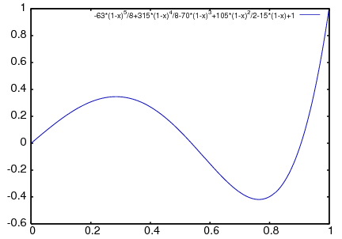

El paquete orthopoly contiene funciones para la evaluación simbólica y numérica de diversos tipos de polinomios ortogonales, como los de Chebyshev, Laguerre, Hermite, Jacobi, Legendre y ultraesféricos (Gegenbauer). Además, orthopoly soporta las funciones esféricas de Bessel, Hankel y armónicas.
Referencias:
El paquete orthopoly, junto con su documentación, fue escrito por Barton Willis de la Universidad de Nebraska en Kearney. El paquete se distribuye con la licencia GNU General Public License (GPL).
load (orthopoly) carga el paquete orthopoly.
Para obtener el polinomio de Legendre de tercer orden,
(%i1) legendre_p (3, x);
3 2
5 (1 - x) 15 (1 - x)
(%o1) - ---------- + ----------- - 6 (1 - x) + 1
2 2
Para expresarlo como una suma de potencias de x, aplíquese ratsimp o rat al resultado.
(%i2) [ratsimp (%), rat (%)];
3 3
5 x - 3 x 5 x - 3 x
(%o2)/R/ [----------, ----------]
2 2
De forma alternativa, conviértase el segundo argumento de to legendre_p (su variable "principal") a una expresión racional canónica (canonical rational expression, CRE)).
(%i1) legendre_p (3, rat (x));
3
5 x - 3 x
(%o1)/R/ ----------
2
Para la evaluación numérica, orthopoly hace uso del análisis de error de ejecución para estimar una cota superior del error. Por ejemplo,
(%i1) jacobi_p (150, 2, 3, 0.2);
(%o1) interval(- 0.062017037936715, 1.533267919277521E-11)
Los intervalos tienen la forma interval (c, r), donde c es el centro y r el radio del intervalo. Puesto que Maxima no soporta aritmética de intervalos, en algunas situaciones, como en los gráficos, puede ser necesario ignorar el error y utilizar el centro del intervalo. Para conseguirlo conviene asignar a la variable orthopoly_returns_intervals el valor false.
(%i1) orthopoly_returns_intervals : false;
(%o1) false
(%i2) jacobi_p (150, 2, 3, 0.2);
(%o2) - 0.062017037936715
Véase la sección Evaluación numérica para más información.
La mayor parte de las funciones de orthopoly tienen una propiedad gradef; así,
(%i1) diff (hermite (n, x), x);
(%o1) 2 n H (x)
n - 1
(%i2) diff (gen_laguerre (n, a, x), x);
(a) (a)
n L (x) - (n + a) L (x) unit_step(n)
n n - 1
(%o2) ------------------------------------------
x
La función unit_step del segundo ejemplo evita el error que aparecería al evaluar la expresión con n igual a 0.
(%i3) ev (%, n = 0);
(%o3) 0
La propiedad "gradef" sólo se aplica a la variable principal; derivadas respecto de las otras variables darán lugar normalmente a mensajes de error; por ejemplo,
(%i1) diff (hermite (n, x), x);
(%o1) 2 n H (x)
n - 1
(%i2) diff (hermite (n, x), n);
Maxima doesn't know the derivative of hermite with
respect the first argument
-- an error. Quitting. To debug this try debugmode(true);
Generalmente, las funciones de orthopoly se distribuyen sobre listas y matrices. Al objeto de que la evaluación se realice completamente, las variables opcionales doallmxops y listarith deben valer ambas true, que es el valor por defecto. Para ilustrar la distribución sobre matrices sirve el siguiente ejemplo
(%i1) hermite (2, x);
2
(%o1) - 2 (1 - 2 x )
(%i2) m : matrix ([0, x], [y, 0]);
[ 0 x ]
(%o2) [ ]
[ y 0 ]
(%i3) hermite (2, m);
[ 2 ]
[ - 2 - 2 (1 - 2 x ) ]
(%o3) [ ]
[ 2 ]
[ - 2 (1 - 2 y ) - 2 ]
En el segundo ejemplo, el elemento i, j-ésimo es hermite (2, m[i,j]), que no es lo mismo que calcular -2 + 4 m . m, según se ve en el siguiente ejemplo.
(%i4) -2 * matrix ([1, 0], [0, 1]) + 4 * m . m;
[ 4 x y - 2 0 ]
(%o4) [ ]
[ 0 4 x y - 2 ]
Si se evalúa una función en un punto fuera de su dominio de definición, generalmente orthopoly devolverá la función sin evaluar. Por ejemplo,
(%i1) legendre_p (2/3, x);
(%o1) P (x)
2/3
orthopoly da soporte a la traducción de expresiones al formato TeX y la representación bidimensional en el terminal.
(%i1) spherical_harmonic (l, m, theta, phi);
m
(%o1) Y (theta, phi)
l
(%i2) tex (%);
$$Y_{l}^{m}\left(\vartheta,\varphi\right)$$
(%o2) false
(%i3) jacobi_p (n, a, a - b, x/2);
(a, a - b) x
(%o3) P (-)
n 2
(%i4) tex (%);
$$P_{n}^{\left(a,a-b\right)}\left({{x}\over{2}}\right)$$
(%o4) false
Cuando una expresión contenga varios polinomios ortogonales con órdenes simbólicos, es posible que aunque la expresión sea nula, Maxima sea incapaz de simplificarla a cero, por lo que si se divide por esta cantidad, aparecerán problemas. Por ejemplo, la siguiente expressión se anula para enteros n mayores que 1, no pudiendo Maxima reducirla a cero.
(%i1) (2*n - 1) * legendre_p (n - 1, x) * x - n * legendre_p (n, x)
+ (1 - n) * legendre_p (n - 2, x);
(%o1) (2 n - 1) P (x) x - n P (x) + (1 - n) P (x)
n - 1 n n - 2
Para un valor específico de n se puede reducir la expresión a cero.
(%i2) ev (% ,n = 10, ratsimp);
(%o2) 0
Generalmente, la forma polinomial de un polinomio ortogonal no es la más apropiada para su evaluación numérica. Aquí un ejemplo.
(%i1) p : jacobi_p (100, 2, 3, x)$
(%i2) subst (0.2, x, p);
(%o2) 3.4442767023833592E+35
(%i3) jacobi_p (100, 2, 3, 0.2);
(%o3) interval(0.18413609135169, 6.8990300925815987E-12)
(%i4) float(jacobi_p (100, 2, 3, 2/10));
(%o4) 0.18413609135169
Este resultado se puede mejorar expandiendo el polinomio y evaluando a continuación, lo que da una aproximación mejor.
(%i5) p : expand(p)$
(%i6) subst (0.2, x, p);
(%o6) 0.18413609766122982
Sin embargo esto no vale como regla general; la expansión del polinomio no siempre da como resultado una expresión más fácil de evaluar numéricamente. Sin duda, la mejor manera de hacer la evaluación numérica consiste en hacer que uno o más de los argumentos de la función sean decimales en coma flotante; de esta forma se utilizarán algoritmos decimales especializados para hacer la evaluación.
La función float de Maxima trabaja de forma indiscriminada; si se aplica float a una expresión que contenga un polinomio ortogonal con el grado u orden simbólico, éstos se pueden transformar en decimales y la expresión no ser evaluada de forma completa. Considérese
(%i1) assoc_legendre_p (n, 1, x);
1
(%o1) P (x)
n
(%i2) float (%);
1.0
(%o2) P (x)
n
(%i3) ev (%, n=2, x=0.9);
1.0
(%o3) P (0.9)
2
La expresión en (%o3) no da como resultado un decimal en coma flotante; orthopoly no reconoce decimales donde espera que haya enteros. De forma semejante, la evaluación numérica de la función pochhammer para órdenes que excedan pochhammer_max_index puede ser problemática; considérese
(%i1) x : pochhammer (1, 10), pochhammer_max_index : 5;
(%o1) (1)
10
Aplicando float no da para x un valor decimal
(%i2) float (x);
(%o2) (1.0)
10.0
A fin de evaluar x como decimal, es necesario asignar a pochhammer_max_index en valor 11 o mayor y aplicar float a x.
(%i3) float (x), pochhammer_max_index : 11;
(%o3) 3628800.0
El valor por defecto de pochhammer_max_index es 100; cámbiese este valor tras cargar el paquete orthopoly.
Por último, téngase en cuenta que las referencias bibliográficas no coinciden a la hora de definir los polinomios ortogonales; en orthopoly se han utilizado normalmente las convenciones seguidas por Abramowitz y Stegun.
Cuando se sospeche de un fallo en orthopoly, compruébense algunos casos especiales a fin de determinar si las definiciones de las que el usuario parte coinciden con las utilizadas por el paquete orthopoly. A veces las definiciones difieren por un factor de normalización; algunos autores utilizan versiones que hacen que las familias sean ortogonales en otros intervalos diferentes de (-1, 1). Así por ejemplo, para definir un polinomio de Legendre ortogonal en (0, 1) defínase
(%i1) shifted_legendre_p (n, x) := legendre_p (n, 2*x - 1)$
(%i2) shifted_legendre_p (2, rat (x));
2
(%o2)/R/ 6 x - 6 x + 1
(%i3) legendre_p (2, rat (x));
2
3 x - 1
(%o3)/R/ --------
2
La mayor parte de las funciones de orthopoly realizan análisis de errores en tiempo de ejecución para estimar el error en la evaluación decimal, a excepción de las funciones esféricas de Bessel y los polinomios asociados de Legendre de segunda especie. Para la evaluación numérica, las funciones esféricas de Bessel hacen uso de funciones SLATEC. No se lleva a cabo ningún método especial de evaluación numérica para los polinomios asociados de Legendre de segunda especie.
Es posible, aunque improbable, que el error obtenido en las evaluaciones numéricas exceda al error estimado.
Los intervalos tienen la forma interval (c, r), siendo c el centro del intervalo y r su radio. El centro del intervalo puede ser un número complejo, pero el radio será siempre un número real positivo.
He aquí un ejemplo:
(%i1) fpprec : 50$
(%i2) y0 : jacobi_p (100, 2, 3, 0.2);
(%o2) interval(0.1841360913516871, 6.8990300925815987E-12)
(%i3) y1 : bfloat (jacobi_p (100, 2, 3, 1/5));
(%o3) 1.8413609135168563091370224958913493690868904463668b-1
Se comprueba que el error es menor que el estimado
(%i4) is (abs (part (y0, 1) - y1) < part (y0, 2));
(%o4) true
En este ejemplo el error estimado es una cota superior para el error verdadero.
Maxima no da soporte a la aritmética de intervalos.
(%i1) legendre_p (7, 0.1) + legendre_p (8, 0.1);
(%o1) interval(0.18032072148437508, 3.1477135311021797E-15)
+ interval(- 0.19949294375000004, 3.3769353084291579E-15)
El usuario puede definir operadores aritméticos para los intervalos. Para definir la suma de intervalos se puede hacer
(%i1) infix ("@+")$
(%i2) "@+"(x,y) := interval (part (x, 1) + part (y, 1),
part (x, 2) + part (y, 2))$
(%i3) legendre_p (7, 0.1) @+ legendre_p (8, 0.1);
(%o3) interval(- 0.019172222265624955, 6.5246488395313372E-15)
Las rutinas especiales para cálculo numérico son llamadas cuando los argumentos son complejos. Por ejemplo,
(%i1) legendre_p (10, 2 + 3.0*%i);
(%o1) interval(- 3.876378825E+7 %i - 6.0787748E+7,
1.2089173052721777E-6)
Compárese con el valor verdadero.
(%i1) float (expand (legendre_p (10, 2 + 3*%i)));
(%o1) - 3.876378825E+7 %i - 6.0787748E+7
Además, cuando los argumentos son números decimales grandes (big floats), se realizan llamadas a las rutinas numéricas especiales; sin embargo, los decimales grandes se convierten previamente a doble precisión y de este tipo serán también los resultados.
(%i1) ultraspherical (150, 0.5b0, 0.9b0);
(%o1) interval(- 0.043009481257265, 3.3750051301228864E-14)
Para representar gráficamente expresiones que contengan polinomios ortogonales se deben hacer dos cosas:
Si las llamadas a las funciones no se comentan, Maxima las evalúa a polinomios antes de hacer el gráfico, por lo que el código especializado en el cálculo numérico no es llamado. Aquí hay un ejemplo de cómo se debe hacer para representar gráficamente una expresión que contiene un polinomio de Legendre:
(%i1) plot2d ('(legendre_p (5, x)), [x, 0, 1]),
orthopoly_returns_intervals : false;
(%o1)

La expresión legendre_p (5, x) se comenta completamente, que no es lo mismo que comentar el nombre de la función, como en 'legendre_p (5, x).
El paquete orthopoly define el símbolo de Pochhammer y la función de escalón unidad en sentencias gradef.
Para convertir los símbolos de Pochhammer en cocientes o funciones gamma, hágase uso de makegamma.
(%i1) makegamma (pochhammer (x, n));
gamma(x + n)
(%o1) ------------
gamma(x)
(%i2) makegamma (pochhammer (1/2, 1/2));
1
(%o2) ---------
sqrt(%pi)
Las derivadas del símbolo de Pochhammer se dan en términos de la función psi.
(%i1) diff (pochhammer (x, n), x);
(%o1) (x) (psi (x + n) - psi (x))
n 0 0
(%i2) diff (pochhammer (x, n), n);
(%o2) (x) psi (x + n)
n 0
Es necesario tener cuidado con la expresión en (%o1), pues la diferencia de las funciones psi tiene polos cuando x = -1, -2, .., -n. Estos polos se cancelan con factores de pochhammer (x, n) haciendo que la derivada sea un polinomio de grado n - 1 si n es entero positivo.
El símbolo de Pochhammer se define para órdenes negativos a través de su representación como cociente de funciones gamma. Considérese
(%i1) q : makegamma (pochhammer (x, n));
gamma(x + n)
(%o1) ------------
gamma(x)
(%i2) sublis ([x=11/3, n= -6], q);
729
(%o2) - ----
2240
De forma alternativa, es posible llegar a este resultado directamente.
(%i1) pochhammer (11/3, -6);
729
(%o1) - ----
2240
La función de escalón unidad es continua por la izquierda; así,
(%i1) [unit_step (-1/10), unit_step (0), unit_step (1/10)];
(%o1) [0, 0, 1]
En caso de ser necesaria una función escalón unidad que no sea continua ni por la izquierda ni por la derecha en el origen, se puede definir haciendo uso de signum; por ejemplo,
(%i1) xunit_step (x) := (1 + signum (x))/2$
(%i2) [xunit_step (-1/10), xunit_step (0), xunit_step (1/10)];
1
(%o2) [0, -, 1]
2
No se debe redefinir la función unit_step, ya que parte del código de orthopoly requiere que la función escalón sea continua por la izquierda.
En general, el paquete orthopoly gestiona la evaluación simbólica a través de la representación hipergeométrica de los polinomios ortogonales. Las funciones hipergeométricas se evalúan utilizando las funciones (no documentadas) hypergeo11 y hypergeo21. Excepciones son las funciones de Bessel de índice semi-entero y las funciones asociadas de Legendre de segunda especie; las funciones de Bessel de índice semi-entero se evalúan utilizando una representación explícita, mientras que la función asociada de Legendre de segunda especie se evalúa recursivamente.
En cuanto a la evaluación numérica, la mayor parte de las funciones se convierten a su forma hipergeométrica, evaluándolas mediante recursión. Además, las excepciones son las funciones de Bessel de índice semi-entero y las funciones asociadas de Legendre de segunda especie. Las funciones de Bessel de índice semi-entero se evalúan numéricamente con código SLATEC.
Referencia: Abramowitz y Stegun, ecuaciones 22.5.37, página 779, 8.6.6 (segunda ecuación), página 334 y 8.2.5, página 333.
Referencia: Abramowitz y Stegun, ecuaciones 8.5.3 y 8.1.8.
Referencia: Abramowitz y Stegun, ecuación 22.5.47, página 779.
Referencia: Abramowitz y Stegun, ecuación 22.5.48, página 779.
Referencia: Abramowitz y Stegun, ecuación 22.5.54, página 780.
Referencia: Abramowitz y Stegun, ecuación 22.5.55, página 780.
Los polinomios de Jacobi están definidos para todo a y b; sin embargo, el peso (1 - x)^a (1 + x)^b no es integrable para a <= -1 o b <= -1.
Referencia: Abramowitz y Stegun, ecuación 22.5.42, página 779.
Referencia: Abramowitz y Stegun, ecuaciones 22.5.16 y 22.5.54, página 780.
Referencia: Abramowitz y Stegun, ecuaciones 22.5.50 y 22.5.51, página 779.
Referencia: Abramowitz y Stegun, ecuaciones 8.5.3 y 8.1.8.
(%i1) orthopoly_recur (legendre_p, [n, x]);
(2 n - 1) P (x) x + (1 - n) P (x)
n - 1 n - 2
(%o1) P (x) = -----------------------------------------
n n
El segundo argumento de orthopoly_recur debe ser una lista con el número correcto de argumentos para la función f; si no lo es, Maxima emite un mensaje de error.
(%i1) orthopoly_recur (jacobi_p, [n, x]);
Function jacobi_p needs 4 arguments, instead it received 2
-- an error. Quitting. To debug this try debugmode(true);
Además, si f no es el nombre de ninguna de las familias de polinomios ortogonales, se emite otro mensaje de error.
(%i1) orthopoly_recur (foo, [n, x]);
A recursion relation for foo isn't known to Maxima
-- an error. Quitting. To debug this try debugmode(true);
Si orthopoly_returns_intervals vale true, los números decimales en coma flotante se retornan con el formato interval (c, r), donde c es el centro del intervalo y r su radio. El centro puede ser un número complejo, en cuyo caso el intervalo es un disco en el plano complejo.
(%i1) w : orthopoly_weight (hermite, [n, x]);
2
- x
(%o1) [%e , - inf, inf]
(%i2) integrate (w[1] * hermite (3, x) * hermite (2, x), x, w[2], w[3]);
(%o2) 0
La variable principal de f debe ser un símbolo, en caso contrario Maxima emite un mensaje de error.
(%i1) pochhammer (x, 3);
(%o1) x (x + 1) (x + 2)
(%i2) pochhammer (x, -3);
1
(%o2) - -----------------------
(1 - x) (2 - x) (3 - x)
A fin de convertir el símbolo de Pochhammer en un cociente de funciones gamma (véase Abramowitz y Stegun, ecuación 6.1.22), hágase uso de makegamma. Por ejemplo,
(%i1) makegamma (pochhammer (x, n));
gamma(x + n)
(%o1) ------------
gamma(x)
Si n es mayor que pochhammer_max_index o si n es simbólico, pochhammer devuelve una forma nominal.
(%i1) pochhammer (x, n);
(%o1) (x)
n
pochhammer (n, x) se evalúa como un producto si y sólo si n <= pochhammer_max_index.
Ejemplos:
(%i1) pochhammer (x, 3), pochhammer_max_index : 3;
(%o1) x (x + 1) (x + 2)
(%i2) pochhammer (x, 4), pochhammer_max_index : 3;
(%o2) (x)
4
Referencia: Abramowitz y Stegun, ecuación 6.1.16, página 256.
Referencia: Abramowitz y Stegun, ecuaciones 10.1.8, página 437 y 10.1.15, página 439.
Referencia: Abramowitz y Stegun, ecuaciones 10.1.9, página 437 y 10.1.15, página 439.
Referencia: Abramowitz y Stegun, ecuación 10.1.36, página 439.
Referencia: Abramowitz y Stegun, ecuación 10.1.17, página 439.
Referencia: Merzbacher 9.64.
En caso de ser necesaria una función escalón unidad que tome el valor 1/2 en el origen, utilícese (1 + signum (x))/2.
Referencia: Abramowitz y Stegun, ecuación 22.5.46, página 779.
This document was generated by Robert Dodier on agosto, 25 2007 using texi2html 1.76.
Created with the Personal Edition of HelpNDoc: Single source CHM, PDF, DOC and HTML Help creation